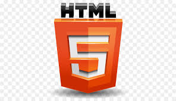

프론트엔드 스터디, 프론트앤드 기본 강의 스터디. HTML CSS JavaScript의 기본을 다루어보자. (HTML, CSS, Javascript + 실전프로젝트)
풀스택개발 by JINI
182K views

백앤드 스터디, 백앤드 기술로 Spring Boot, JPA, MySQL을 이용하여 API를 만들어보자! 실전에서 사용하는 서비스와 노하우를 전수받을 수 있다!!
풀스택개발 by JINI
273K views

데브옵스 스터디, AWS를 활용한 클라우드 서버 개념을 알아보고, Jenkins, Docker에 관한 내용도 함께 알아봅시다~!
풀스택개발 by JINI
82K views